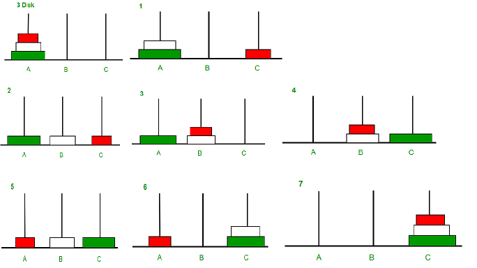
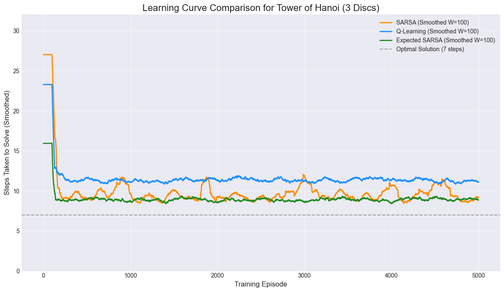
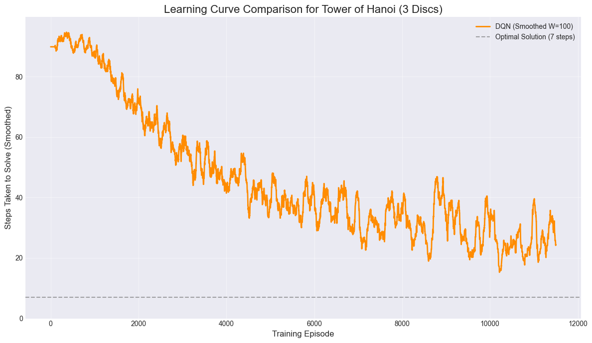

Reinforcement Learning on Tower of Hanoi
Table of Contents
Introduction #
In this project, I explored the different foundation Reinforcement Learning (RL) algorithms - specifically Temporal Difference (TD) Q-table methods (SARSA, Q-Learning, Expected SARSA) and a Deep Q-Network (DQN) trained to solve the classic Tower of Hanoi puzzle. The objective is to compare their efficiency, convergence, and ability to find the optimal solution in this discrete action-space environment.
Background #
The Tower of Hanoi Problem was introduced during my first year computer science course (COMPSCI 1MA3) at McMaster University, Christopher Anand was my lecturer at that time. The problem was introduced to illustrate solving problems with recursion in Haskell.
The Tower of Hanoi Problem #
The Tower of Hanoi is a mathematical puzzle with a simple set of rules, making it an excellent testbed for RL.
Problem Details
-
Setup: A set of $n$ disks of different sizes is stacked on one of three pegs (Source, Auxiliary, Destination) in increasing order of size (largest on the bottom).
-
Goal: Move the entire stack to another peg, following these rules:
- Only one disk can be moved at a time.
- The top disk from any peg can be moved to any other peg.
- A larger disk can never be placed on top of a smaller disk.
The Deterministic Solution
The problem has a well-known deterministic, optimal solution that requires $2^n - 1$ moves for $n$ disks. For example, a 3-disk problem requires $2^3 - 1 = 7$ moves. This optimal path provides a clear benchmark for our RL agents.

Read more about The Tower of Hanoi Problem at here and here. You can also try the interactive puzzle here.
Reinforcement Learning Overview #
RL is a framework where an agent learns to make sequential decisions by interacting with an environment.
The Tower of Hanoi naturally fits this paradigm:
- Agent: The RL algorithm (e.g., Q-Learning).
- Environment: The state of the three pegs and the disks.
- State: The configuration of disks on the three pegs (e.g., a tuple representing the disk on top of each peg).
- Action: Moving the top disk from one peg to another valid peg (e.g., $Move(Peg_A \rightarrow Peg_C)$).
- Reward: A numerical value the agent receives after performing an action.
- Episode: A single run from the starting state until the goal state is reached (or a maximum number of steps is hit).
- Q-Value ($Q(s, a)$): The expected future reward of taking action $a$ in state $s$. The agent’s goal is to learn these values to choose the best action in every state.
Bellman Equation for Action Value Function (Q-function) $$Q_{new}(s, a) \leftarrow Q(s, a) + \alpha [Reward + \gamma \max_{a’} Q(s’, a’) - Q(s, a)]$$
The Environment #
The environment is everything the learning agent interacts with. It is the simulation or real-world system that defines:
- The possible States the agent can be in (what the agent observes).
- The set of Actions the agent can take.
- The Dynamics (rules) that govern how the environment transitions from one state to another when an action is taken.
- The Reward or Penalty the agent receives for its actions.
The goal of the agent is to learn a policy or a strategy that maximizes the total cumulative reward received from this environment.
For this project a TowerOfHanoiEnv class is created which defined the formal environment for the agent to learn the optimal solution to the N-disk (default to 3), 3-peg Tower of Hanoi puzzle.
The class defined:
1. State Space (Observation)
- Concept: The complete, unique configuration of all 3 discs across the 3 pegs.
- Implementation: The state is encoded as a fixed-length vector (9 elements, 3 pegs $ \times $ 3 slots). This state vector is padded with zeros for empty slots, ensuring the agent always observes a consistent, unambiguous representation of the board (e.g., (3, 2, 1, 0, 0, 0, 0, 0, 0)). Size: $3^3 = \mathbf{27}$ valid states.
2. Action Space
- Concept: The set of all possible moves between the pegs.
- Implementation: A set of 6 discrete actions (e.g. $ 0 \rightarrow 1 $, $ 1 \rightarrow 2 $, etc.) are mapped to the integer indices 0 through 5, which the agent chooses.
3. Dynamics and Rewards
- Dynamics: The environment enforces the puzzle’s rule: no larger disk can be placed on a smaller disk (_is_valid_move).
- Reward Function (The Guide):
- Goal State (+1): A large positive reward is given only when all discs are correctly stacked on the final peg (Peg 2).
- Illegal Move (-1): A negative penalty is given for violating the rules, strongly discouraging invalid actions.
- Legal Non-Goal Move (0): A neutral reward for standard moves, which implicitly forces the agent to seek the solution path that minimizes the number of steps to reach the +1 reward.
Termination: An episode ends either upon solving the puzzle or when the maximum step limit (default 50) is exceeded.
4. Visualization
The TowerOfHanoiEnv came with the render method that is a utility function for debugging and human interpretability of the agent’s actions.
It will print out the puzzle state provided by the state tuple.
For example for the initial state: $(3, 2, 1, 0, 0, 0, 0, 0, 0)$
To initiate the environment and fetch initial state:
env = TowerOfHanoiEnv(n_discs=3)
state = env.reset()
env.render()
It will render as:
1
2
3
__________________
P1 P2 P3
------------------
Implementation of the Tower of Hanoi Environment in Python:
import numpy as np
class TowerOfHanoiEnv:
def __init__(self, n_discs=3, max_steps=50):
self.n_discs = n_discs
self.max_steps = max_steps
self.actions = [(1,2),(1,3),(2,1),(2,3),(3,1),(3,2)] #action space
self.reset()
def reset(self):
# Towers: top of stack on right
self.towers = [list(range(self.n_discs, 0, -1)), [], []]
self.steps = 0
return self._get_state()
def _get_state(self):
# Flattened state (pad with 0s)
state = []
for peg in self.towers:
s = peg + [0]*(self.n_discs - len(peg))
state.extend(s)
return np.array(state, dtype=int)
def _is_valid_move(self, src, dest):
# Check for illegal move
if not self.towers[src]:
return False
if self.towers[dest] and self.towers[src][-1] > self.towers[dest][-1]:
return False
return True
def step(self, action):
"""
Action: integer 0-5 mapping to move (src, dest)
Mapping: [(1->2),(1->3),(2->1),(2->3),(3->1),(3->2)]
"""
src, dest = self.actions[action]
src -= 1
dest -= 1
reward = 0
done = False
if self._is_valid_move(src, dest):
self.towers[dest].append(self.towers[src].pop())
else:
reward = -1 # penalty for illegal move
self.steps += 1
if self.towers[2] == list(range(self.n_discs, 0, -1)):
reward = 1 # solved
done = True
elif self.steps >= self.max_steps:
done = True
return self._get_state(), reward, done
def render(self):
# Render state to command line for human interpretability
max_height = self.n_discs
for level in range(max_height, 0, -1):
row = []
for peg in self.towers:
if len(peg) >= level:
row.append(str(peg[level-1]).center(5))
else:
row.append(" ".center(5))
print(" ".join(row))
print("__________________")
print(" P1 P2 P3 ")
print("-" * 18)
Tabular Temporal Difference Learning #
After defining the environment, the first RL approach involved using a Q-Table to store the $Q(s, a)$ value for every possible state-action pair. Since the 3-disk problem has a manageable number of states, this is feasible.
A Q-Table is essentially a lookup table used by a learning agent to help it make decisions in its environment.
- It is structured as a two-dimensional matrix:
- Rows represent the possible States ($s$) the agent can be in.
- Columns represent the possible Actions ($a$) the agent can take.
An example Q-Table:
| states | action 1 | action 2 | action … |
|---|---|---|---|
| state 1 | -0.5 | 1.8 | … |
| state 2 | 0.0 | -2.7 | … |
| state 3 | 2.5 | -0.1 | … |
| … | … | … | … |
Each cell in the table contains a Q-value ($Q(s, a)$), which is an estimate of the expected future reward the agent will receive if it takes a specific action ($a$) while in a specific state ($s$), and then follows the optimal strategy thereafter.
For a 3 discs ($N$) and 3 pegs ($K$) setup, there are total of $N^K = 3^3 = 27$ possible states and $K \times (K - 1) = 3 \times (3 - 1) = 6$ distinct actions an agent can apply.
| From Peg | To Peg | Actions |
|---|---|---|
| A | B | Move A $\rightarrow$ B |
| A | C | Move A $\rightarrow$ C |
| B | A | Move B $\rightarrow$ A |
| B | C | Move B $\rightarrow$ C |
| C | A | Move C $\rightarrow$ A |
| C | B | Move C $\rightarrow$ B |
Therefore the Q-Table for the Tower of Hanoi puzzle ($N=3$, $K=3$) is $ 27 \times 6 $.
SARSA, Q-Learning, Expected SARSA #
There are three common algorithms explored within the tabular temporal difference learning - SARSA, Q-Learning (a.k.a. SARSAMax) and Expected SARSA. They are known as the most common techniques used for model-free, off-policy and on-policy learning. They are all based on the concept of Temporal Difference (TD) learning, which involves updating an estimated Q-value based on a subsequent observed Q-value.
Details about the algorithms:
SARSA Update Rule: $$Q(s, a) \leftarrow Q(s, a) + \alpha \left[r + \gamma Q(s’, a’) - Q(s, a)\right]$$ Where $a’$ is the action selected by the current policy $\pi$ in state $s’$.
Q-Learning (a.k.a. SARSAMax) Update Rule: $$Q(s, a) \leftarrow Q(s, a) + \alpha \left[r + \gamma \max_{a’} Q(s’, a’) - Q(s, a)\right]$$ Where $\max_{a’} Q(s’, a’)$ is the highest possible Q-value from the next state $s’$, irrespective of the action actually taken.
Expected SARSA Update Rule: $$Q(s, a) \leftarrow Q(s, a) + \alpha \left[r + \gamma \sum_{a’} \pi(a’|s’) Q(s’, a’) - Q(s, a)\right]$$ Where the sum calculates the weighted average of all possible next Q-values based on the current policy’s probabilities ($\pi$).
Note:
- $\alpha$ - Learning Rate: extent to which the newly acquired information overrides the old information (the current Q-value).
- $\gamma$ - Discount Factor: determines the importance of future rewards vs. immediate rewards.
Algorithm Comparison
| Algorithm | Update Rule | Pros | Cons |
|---|---|---|---|
| SARSA (On-Policy) | Uses Q(s′,a′) where a′ is the next action actually taken by the ϵ-greedy policy. | Guarantees convergence for ϵ-greedy policy, learns a safer policy. | Slower to converge to the optimal policy, as it explores inefficient moves. |
| Q-Learning (Off-Policy) | Uses Q(s′,a∗), where a∗ is the optimal action in the next state s′ (ignoring the exploration policy). | Learns the optimal policy Q∗. Often converges faster to optimality. | Learns an optimal policy outside the actual explored path; prone to high reward variance. |
| Expected SARSA (Off-Policy) | Uses the E[Q(s′,a′)] weighted by the probability of taking each action a′ in state s′. | Smoother learning than Q-Learning, better stability, learns the optimal policy. | Requires calculating the expected value (a sum over all next actions), computationally heavier. |
On-Policy vs. Off-Policy
-
On-policy methods learn the value of the policy they are currently using to act.
-
Off-policy methods use data generated by an exploratory policy to learn the value of a different, usually optimal and non-exploratory policy.
ϵ-greedy policy
The ϵ-greedy policy is a simple yet effective strategy used in Reinforcement Learning (RL) to manage the trade-off between exploration and exploitation. It dictates how an agent chooses its actions based on its current knowledge (Q-values).
-
Exploitation: Choosing the action that has the highest estimated value (the best known action). This maximizes the immediate reward based on current knowledge.
-
Exploration: Choosing a random action, which allows the agent to discover new states and potentially find actions that yield higher long-term rewards than those currently known.
Results #
For each algorithms, 5,000 episodes were simulated. i.e. the algorithm has done 5,000 iterations each either solved the puzzle within max 50 moves or terminated due to max moves reached. Each time agent made a move with ϵ = 10% (i.e. 10% chance to make a random move given the current state - 10% chance for exploration), the Q-table values is updated with the respective state-action Q-value.
Here is the learning curve comparison. i.e. the moving average of the total moves the agent taken from each episode.

This analysis compares the learning performance of SARSA, Q-Learning, and Expected SARSA on the 3-disc Tower of Hanoi puzzle (optimal solution: 7 steps). While curve smoothing and persistent $\epsilon$-greedy exploration prevent average steps from strictly reaching the optimum, all algorithms successfully executed the optimal 7-step solution during training.
Comparative Performance Analysis
Expected SARSA demonstrated the fastest and most robust convergence, achieving the earliest optimal solution at episode 31. Its also has the best stability resulted in the most consistent performance near the optimum.
Q-Learning showed surprisingly delayed initial performance. Despite its design to learn the optimal policy, it only achieved the optimal 7-step solution much later, at episode 606. Q-Learning consistently produced a higher average number of steps than the other two methods. This delayed convergence is attributed to the necessary testing and validation of its optimistic, off-policy updates by the behavior policy during early training.
SARSA performed very well, finding the optimal solution as early as episode 55. However the learning curve was not as stable as the other two methods.
Implementation of the training process:
import random
from TowerOfHanoiEnv import *
env = TowerOfHanoiEnv(n_discs=3)
# Hyperparameters
episodes = 5000
alpha = 0.1 # Learning Rate - extent to which the newly acquired information overrides the old information (the current Q-value).
gamma = 0.99 # Discount Factor - determines the importance of future rewards vs. immediate rewards.
epsilon = 0.2 # Epsilon Greedy (20% chance to explore new action)
algorithm_choice = 0
algorithm_choices = {0: 'sarsa', 1: 'q_learning', 2: 'expected_sarsa'} #q_learning a.k.a. sarsamax
current_algorithm = algorithm_choices[algorithm_choice]
print(f"{current_algorithm} RL algorithm is used.")
Q = {}
ep_steps = []
def select_action(state, Q, epsilon, action_space_size):
"""Epsilon-greedy action selection."""
if state not in Q:
# Add unseen state to Q-table
Q[state] = [0.0] * action_space_size
if random.random() < epsilon:
# Explore: Choose a random action
return random.randint(0, action_space_size - 1)
else:
# Exploit: Choose the best-known action
return int(np.argmax(Q[state]))
for ep in range(episodes):
print(f"Episode: {ep}\n")
state = tuple(env.reset())
done = False
steps = 0
action = select_action(state, Q, epsilon, len(env.actions))
while not done:
current_action = action
next_state, reward, done = env.step(action)
next_state = tuple(next_state)
if next_state not in Q:
Q[next_state] = [0]*len(env.actions)
# td_target - Temporal Difference Target
td_target = 0
if done:
td_target = reward
else:
greedy_action_idx = int(np.argmax(Q[next_state]))
if current_algorithm == 'sarsa':
action_for_next_step = select_action(next_state, Q, epsilon, len(env.actions))
target_q_value = Q[next_state][action_for_next_step]
elif current_algorithm == 'q_learning': #sarsamax
# Greedy Policy - Use max (best) Q i.e. rewards from previous to select next action
action_for_next_step = select_action(next_state, Q, epsilon, len(env.actions)) # Still need next step action for behavior (Off-Policy)
target_q_value = max(Q[next_state])
elif current_algorithm == 'expected_sarsa':
# Expected SARSA: A' is the average value over the behavior policy
action_for_next_step = select_action(next_state, Q, epsilon, len(env.actions)) # Still need next step action for behavior (Off-Policy)
expected_q_value = 0
prob_greedy = 1 - epsilon + (epsilon / len(env.actions))
prob_non_greedy = epsilon / len(env.actions)
for a_prime in range(len(env.actions)):
q_value = Q[next_state][a_prime]
if a_prime == greedy_action_idx:
expected_q_value += prob_greedy * q_value
else:
expected_q_value += prob_non_greedy * q_value
target_q_value = expected_q_value
# Calculate the target Q - only differences between the three methods
td_target = reward + gamma * target_q_value
# Update Q values
old_q_value = Q[state][current_action]
Q[state][current_action] = old_q_value + alpha * (td_target - old_q_value)
state = next_state
action = action_for_next_step
steps += 1
env.render()
print(f"Action: {env.actions[action]} Reward: {reward}\n")
print(f"Episode {ep} Finished! Total steps: {steps}")
ep_steps.append(steps)
Final Q-Table from Expected SARSA:
| State | (1, 2) | (1, 3) | (2, 1) | (2, 3) | (3, 1) | (3, 2) | best_move |
|---|---|---|---|---|---|---|---|
| (3, 2, 1, 0, 0, 0, 0, 0, 0) | 0.075281 | 0.187439 | -0.971061 | -0.971057 | -0.971060 | -0.971054 | (1, 3) |
| (3, 2, 0, 1, 0, 0, 0, 0, 0) | -0.831940 | 0.013584 | 0.012789 | 0.187417 | -0.815452 | -0.792743 | (2, 3) |
| (3, 0, 0, 1, 0, 0, 2, 0, 0) | -0.413558 | -0.577953 | 0.156089 | -0.034169 | -0.022135 | -0.277103 | (2, 1) |
| (3, 0, 0, 0, 0, 0, 2, 1, 0) | -0.030925 | -0.100004 | -0.477923 | -0.194165 | 0.016315 | -0.030810 | (3, 1) |
| (0, 0, 0, 3, 0, 0, 2, 1, 0) | -0.350220 | -0.191525 | -0.020551 | -0.351484 | -0.022189 | -0.020075 | (3, 2) |
| (0, 0, 0, 3, 1, 0, 2, 0, 0) | -0.191602 | -0.190958 | -0.018596 | -0.017864 | -0.015734 | -0.419241 | (3, 1) |
| (1, 0, 0, 3, 0, 0, 2, 0, 0) | -0.016545 | -0.015582 | -0.415872 | -0.276835 | -0.276117 | -0.016887 | (1, 3) |
| (3, 1, 0, 0, 0, 0, 2, 0, 0) | -0.017275 | -0.035352 | -0.415176 | -0.392701 | -0.373058 | 0.319704 | (3, 2) |
| (3, 2, 0, 0, 0, 0, 1, 0, 0) | 0.320544 | -0.812580 | -0.812584 | -0.812577 | 0.028942 | 0.075287 | (1, 2) |
| (3, 0, 0, 2, 0, 0, 1, 0, 0) | -0.679507 | -0.679509 | 0.187416 | -0.679514 | 0.323786 | 0.449636 | (3, 2) |
| (3, 1, 0, 2, 0, 0, 0, 0, 0) | 0.449593 | 0.265910 | -0.646636 | 0.187752 | -0.640434 | -0.594036 | (1, 2) |
| (3, 0, 0, 2, 1, 0, 0, 0, 0) | -0.550422 | 0.585302 | 0.323746 | 0.320510 | -0.550457 | -0.550443 | (1, 3) |
| (0, 0, 0, 2, 1, 0, 3, 0, 0) | -0.414763 | -0.414754 | 0.718357 | 0.572364 | 0.449567 | -0.414802 | (2, 1) |
| (1, 0, 0, 2, 0, 0, 3, 0, 0) | 0.585214 | 0.572405 | -0.281705 | 0.858238 | -0.281718 | -0.281688 | (2, 3) |
| (0, 0, 0, 2, 0, 0, 3, 1, 0) | -0.430065 | -0.380925 | 0.156087 | -0.397285 | 0.718319 | 0.461980 | (3, 1) |
| (2, 0, 0, 0, 0, 0, 3, 1, 0) | -0.005120 | -0.363449 | -0.247507 | -0.395108 | -0.002112 | 0.396416 | (3, 2) |
| (2, 1, 0, 0, 0, 0, 3, 0, 0) | 0.087322 | -0.004142 | -0.273496 | -0.274181 | -0.100000 | -0.006605 | (1, 2) |
| (2, 0, 0, 1, 0, 0, 3, 0, 0) | -0.271407 | 0.674633 | -0.000287 | 0.034272 | -0.310084 | -0.191551 | (1, 3) |
| (0, 0, 0, 1, 0, 0, 3, 2, 0) | -0.305323 | -0.256640 | 0.858193 | 0.717570 | 0.250321 | -0.171201 | (2, 1) |
| (1, 0, 0, 0, 0, 0, 3, 2, 0) | 0.714351 | 1.000000 | -0.141805 | -0.141801 | -0.141809 | 0.718287 | (1, 3) |
| (0, 0, 0, 0, 0, 0, 3, 2, 1) | 0.000000 | 0.000000 | 0.000000 | 0.000000 | 0.000000 | 0.000000 | (1, 2) |
| (1, 0, 0, 3, 2, 0, 0, 0, 0) | -0.015486 | -0.016414 | -0.191504 | -0.017834 | -0.349199 | -0.194357 | (1, 2) |
| (0, 0, 0, 3, 2, 1, 0, 0, 0) | -0.272894 | -0.191525 | -0.013734 | -0.011694 | -0.101263 | -0.193889 | (2, 3) |
| (0, 0, 0, 3, 2, 0, 1, 0, 0) | -0.274153 | -0.192381 | -0.017178 | -0.100960 | -0.015711 | -0.015948 | (3, 1) |
| (2, 0, 0, 3, 0, 0, 1, 0, 0) | -0.012178 | -0.273505 | -0.274876 | -0.192734 | -0.010320 | -0.012382 | (3, 1) |
| (2, 1, 0, 3, 0, 0, 0, 0, 0) | -0.011507 | -0.012488 | -0.190346 | -0.009123 | -0.192174 | -0.192999 | (2, 3) |
| (2, 0, 0, 3, 1, 0, 0, 0, 0) | -0.190330 | -0.014598 | -0.014421 | -0.013246 | -0.192705 | -0.351353 | (2, 3) |
Solution found by Expected SARSA:
step 0:
1
2
3
__________________
P1 P2 P3
------------------
step 1: 1->3
2
3 1
__________________
P1 P2 P3
------------------
step 2: 1->2
3 2 1
__________________
P1 P2 P3
------------------
step 3: 3->2
1
3 2
__________________
P1 P2 P3
------------------
step 4: 1->3
1
2 3
__________________
P1 P2 P3
------------------
step 5: 2->1
1 2 3
__________________
P1 P2 P3
------------------
step 6: 2->3
2
1 3
__________________
P1 P2 P3
------------------
step 7: 1->3
1
2
3
__________________
P1 P2 P3
------------------
To reuse a trained agent:
done = False
step = 0
# Setup environment
env = TowerOfHanoiEnv(n_discs=3)
state = tuple(env.reset()) #initial state
print(f"step {step}:\n")
env.render()
while not done:
action = Q[state].index(max(Q[state])) # Choose best action given by Q-Table
step += 1
print(f"\nstep {step}: {env.actions[action][0]}->{env.actions[action][1]}")
next_state, reward, done = env.step(action)
state = tuple(next_state)
env.render()
Deep Q-Network (DQN) #
Tabular Temporal Difference Learning is perfect for problems with small action-state space, otherwise for a larger complex problems where the action-state space becomes too vast to fit in a table. For example a 6 discs 3 pegs puzzle quickly grow into $6^3 = 216 rows$ and there are totalling $216 \times 6 = 1,296$ Q-values in the tables to be update, that leads to much more episodes for a stable convergence towards the final state. This is where Deep Q-Network (DQN) shines.
Instead of a Q-Table, a Neural Network (NN) is used as a function approximator to estimate the $Q(s,a)$ values.
Note, a well designed Neural Network may able to generalize without seeing all possible states where an agent trained with the incomplete Q-Table (not all possible states were seen given a finite time) is almost guaranteed not successful, as it only follows the trained Q-value from the Q-Table strictly to action.
QNetwork #
The standard fully-connected (feedforward) Neural Network structure is:
- Input: The current state $s$ (a vector length $N \times K$ i.e. $ 3 \times 3 = 9$ representation of the disc positions)
- Architecture: A simple Multilayer Perceptron (MLP) with two hidden layers, each containing 64 nodes.
- Activation: The Rectified Linear Unit ($ReLU$) activation function is applied after the first and second hidden layers.
- Output: A Q-value for every possible action $a$ equals to the action space (e.g. size 6).
The agent - NN sees only what the given state is then based on iterative training, and based on the experiences it will begin to summarize its learning (based on reward/penality received) to better approximate the corresponding Q-Value for each state-action pair.
In a sense that the Q-Table is now stored as the weights/bias within the hidden layers of the NN instead of a table.
It is important to understand the fundamental method behind the Q-Learning framework with DQN, where the QNetwork is estimating the Q-Value for each state-action pairs as opposed to directly output the best discrete action.
Since we are still staying with the Q-Learning framework where leverages the Bellman Optimality Equation which provide the agent better sense on how the value of the reward is associated with the state and the action taken. This provide the efficiency improvement over a trial and error approach if the Neural Network just learn based on the amount of reward/loss after each action.
The Bellman Equation and the Bellman Optimality Equation key concept is in the Target value, where it updates the current Q-value after peaking at what the next reward would be if choose the next action based on the max Q-value in the next targeted state.
Bellman Optimality Equation #
DQN is a value-based method that is trained to satisfy the Bellman Optimality Equation. The loss function for DQN is based on minimizing the difference between the current Q-estimate and the Bellman target:
$$\text{Loss} = \left[ (\text{Current Q-value}) - (\text{Target Q-value}) \right]^2$$
Where the Target Q-value is calculated as:
$$\text{Target} = R + \gamma \cdot \max_{a’} Q_{\text{target}}(s’, a’)$$
The network must output Q-values so that:
- The Current Estimate (The left side of the equation) can be read directly from the network’s output for the specific action $a$ that was taken.
- The Target Estimate (The right side of the equation) can be calculated using the $\max$ function over the Q-values predicted for the next state, $s’$, which requires the network to output the value for all possible next actions $a’$.
In short, the DQN is a value estimator because the math behind Q-Learning fundamentally requires it to estimate the future cumulative reward (the Q-value) in order to define a training target and guide action selection.
One drawback (also strength) is that now it may take lot more episodes to train the NN (many more parameters to update - converges). So we may not know how many episodes is enough for the NN to converge or giving it too many episodes to run when it converges.
Solution is simple:
- If realized not enough episodes then just add more
- If agent’s performance does not signifcantly improved after a while then stop (i.e. Early Stopping)
Training #
The QNetwork was trained with 20,000 episodes, best network (solution with less step) is then saved to revisit and early stopping is implemented. However no earlier stopping is allowed before at least 30% of the total episodes is ran.
The agent will sample enough steps (BATCH_SIZE = 64) initially before learning (compute Q-Value estimates) happens and all seen steps (i.e. past experience) are stored in the replay buffer. The purpose is to break the correlation between sequence of action, instead the DQN will predict the Q-Value from any given random state (new or past experience) to reduce the chance for the network overfit quickly to the most recent step and forget past lessons (catastrophic forgetting).
The DQN will query from the Replay Buffer object (once it collected enough experiences) then random choosen batch of states will feed into the network and Q-values for each states will be ouput. The goal is to achieve more stable and efficient training.
For the ϵ-greedy is also implemented as a decaying process. i.e. ϵ - chances for random action for exploration will reduce as training goes on. That to simulate encouraging exploring earlier in the training then solidify knowledges later on in training.
Result #

The DQN agent performed much worst than the tabular versions (SARSA, Q-Learning, Expected SARSA) where it found the optimal solution (7 steps) for the 3 discs 3 pegs setup at episode 5,500. The convergence rate also is much slower than the other methods. The network is much harder to train and there are lot more hyper-parameters to fine tune.
Big drawbacks of DQN is that it is much harder to train, it is alot more sensitive to how the reward mechanism design that would improve learning efficiency. Currently the agents will gain 0 reward for a move, -1 for an illegal move and only when completing the puzzle will get the maximum reward. Hence for a larger puzzle, the agent will waste lot more time on exploring and exploiting without any meaningful rewards until by random chance it is able to complete the puzzle once.
To scale up for a larger puzzle the DQN will also needed to be more sophasticated as a simple 2 hidden layers is just not enough.
e.g. a 9 discs 3 pegs puzzle will have an optimal $ 2^9 - 1 = 511$ moves and $3^9 = 19,683$ possible states. Need a much bigger network.
DQN Implementation:
import numpy as np
import random
from collections import deque, namedtuple
from TowerOfHanoiEnv import *
import torch
import torch.nn as nn
import torch.optim as optim
import torch.nn.functional as F
class QNetwork(nn.Module):
def __init__(self, state_size, action_size, seed):
"""Initializes parameters and builds model.
Args:
state_size (int): Dimension of each state (e.g., 9 for 3 discs).
action_size (int): Dimension of action space (6 possible moves).
seed (int): Random seed for reproducibility.
"""
super(QNetwork, self).__init__()
# Set a seed for reproducibility
self.seed = torch.manual_seed(seed)
# Simple feedforward network
self.fc1 = nn.Linear(state_size, 64)
self.fc2 = nn.Linear(64, 64)
self.fc3 = nn.Linear(64, action_size)
def forward(self, state):
"""Maps state input to action Q-values."""
x = F.relu(self.fc1(state))
x = F.relu(self.fc2(x))
return self.fc4(x)
# %%
# Hyperparameters for the Agent
BUFFER_SIZE = int(1e5) # Replay buffer size
BATCH_SIZE = 64 # Minibatch size for sampling
GAMMA_DQN = 0.99 # Discount factor
LR = 5e-4 # Learning rate of the optimizer
UPDATE_EVERY = 4 # How often to update the network (step count)
TARGET_UPDATE_FREQ = 100 # How often to update the target network (step count)
# Define the device for PyTorch operations
device = torch.device("cuda:0" if torch.cuda.is_available() else "cpu")
# Replay Buffer named tuple
Experience = namedtuple('Experience', field_names=['state', 'action', 'reward', 'next_state', 'done'])
class ReplayBuffer:
"""Fixed-size buffer to store experience tuples."""
def __init__(self, buffer_size, batch_size, seed):
self.memory = deque(maxlen=buffer_size)
self.batch_size = batch_size
self.seed = random.seed(seed)
def add(self, state, action, reward, next_state, done):
"""Add a new experience to memory."""
e = Experience(state, action, reward, next_state, done)
self.memory.append(e)
def sample(self):
"""Randomly sample a batch of experiences from memory."""
experiences = random.sample(self.memory, k=self.batch_size)
# Convert experiences to Tensors
states = torch.from_numpy(np.vstack([e.state for e in experiences if e is not None])).float().to(device)
actions = torch.from_numpy(np.vstack([e.action for e in experiences if e is not None])).long().to(device)
rewards = torch.from_numpy(np.vstack([e.reward for e in experiences if e is not None])).float().to(device)
next_states = torch.from_numpy(np.vstack([e.next_state for e in experiences if e is not None])).float().to(device)
dones = torch.from_numpy(np.vstack([e.done for e in experiences if e is not None]).astype(np.uint8)).float().to(device)
return (states, actions, rewards, next_states, dones)
def __len__(self):
"""Return the current size of internal memory."""
return len(self.memory)
class DQNAgent:
"""Interacts with and learns from the environment."""
def __init__(self, state_size, action_size, seed):
self.state_size = state_size
self.action_size = action_size
self.seed = random.seed(seed)
# Q-Network (Local and Target)
self.qnetwork_local = QNetwork(state_size, action_size, seed).to(device)
self.qnetwork_target = QNetwork(state_size, action_size, seed).to(device)
self.optimizer = optim.Adam(self.qnetwork_local.parameters(), lr=LR)
# Replay memory
self.memory = ReplayBuffer(BUFFER_SIZE, BATCH_SIZE, seed)
# Initialize time step for learning updates
self.t_step = 0
def step(self, state, action, reward, next_state, done):
# Save experience in replay memory
self.memory.add(state, action, reward, next_state, done)
# Learn every UPDATE_EVERY time steps.
self.t_step = (self.t_step + 1) % UPDATE_EVERY
if self.t_step == 0:
# If enough samples are available in memory, get a random subset and learn
if len(self.memory) > BATCH_SIZE:
experiences = self.memory.sample()
self.learn(experiences, GAMMA_DQN)
# Update target network every TARGET_UPDATE_FREQ steps
if self.t_step % TARGET_UPDATE_FREQ == 0:
self.update_target_network()
def act(self, state, epsilon, inference=False):
"""Returns actions for given state as per current policy (epsilon-greedy)."""
# Convert state from numpy array to PyTorch tensor
state = torch.from_numpy(state).float().unsqueeze(0).to(device)
# Get Q-values from local network
self.qnetwork_local.eval() # Set network to evaluation mode (no gradient tracking)
with torch.no_grad():
# Note: Using torch.no_grad() is crucial during action selection to prevent training.
action_values = self.qnetwork_local(state)
if not inference:
self.qnetwork_local.train() # Set network back to training mode
# Epsilon-greedy action selection
if random.random() > epsilon:
return np.argmax(action_values.cpu().data.numpy()) # Best action
else:
return random.choice(np.arange(self.action_size)) # Random action
def learn(self, experiences, gamma):
"""Update value parameters using given batch of experience tuples."""
states, actions, rewards, next_states, dones = experiences
# Get max predicted Q values (for next states) from target model
# The Q-Learning update rule uses the max Q value for the next state
Q_targets_next = self.qnetwork_target(next_states).detach().max(1)[0].unsqueeze(1)
# Compute Q targets for current states: Q_target = R + gamma * max_a(Q_target(s', a))
Q_targets = rewards + (gamma * Q_targets_next * (1 - dones))
# Get expected Q values from local model: Q_expected = Q_local(s, a)
# Gather the Q-value for the action that was actually taken
Q_expected = self.qnetwork_local(states).gather(1, actions)
# Compute loss (Mean Squared Error)
loss = F.mse_loss(Q_expected, Q_targets)
# Minimize the loss
self.optimizer.zero_grad()
loss.backward()
self.optimizer.step()
def update_target_network(self):
"""Soft update model parameters: $\\theta_{\\text{target}} = \\tau*\\theta_{\\text{local}} + (1 - \\tau)*\\theta_{\\text{target}}$"""
# A full copy is often used in basic DQN, meaning $\\tau=1$.
# This is a full copy update.
for target_param, local_param in zip(self.qnetwork_target.parameters(), self.qnetwork_local.parameters()):
target_param.data.copy_(local_param.data)
def save_agent(self, path):
torch.save(self.qnetwork_local.state_dict(), path)
def load_agent(self, path):
self.qnetwork_local.load_state_dict(torch.load(path))
self.qnetwork_target.load_state_dict(torch.load(path))
# %%
# --- DQN Specific Hyperparameters ---
EPISODES_DQN = 20000
EPS_START = 1.0 # Starting value of epsilon
EPS_END = 0.01 # Minimum value of epsilon
EPS_DECAY = 0.9999 # Decay rate for epsilon - lower epsilon after each episode (i.e. less likely to choose random actions later in the training)
SEED = 0
best_agent_path = "TowerHanoi_DQN.pth"
# --- Environment Setup (Using the existing TowerOfHanoiEnv) ---
env = TowerOfHanoiEnv(n_discs=3, max_steps=50)
state_size = env.n_discs * 3 # 3 pegs * n_discs (for padding)
action_size = len(env.actions)
# --- Initialize the DQNAgent ---
agent = DQNAgent(state_size=state_size, action_size=action_size, seed=SEED)
# --- DQN Training Loop ---
eps = EPS_START # Initialize epsilon
ep_steps_DQN = []
solved_in_episodes = None
min_steps = 2**env.n_discs - 1 # Optimal moves for N discs
best_steps = np.inf
print(f"--- Starting DQN Training for {env.n_discs} Discs ---")
for ep in range(EPISODES_DQN):
state = env.reset() # State is a numpy array
done = False
steps = 0
while not done:
# Agent selects an action using epsilon-greedy policy
action = agent.act(state, eps)
# Environment takes a step
next_state, reward, done = env.step(action)
# Agent stores experience and learns
# Note: We pass the action index (int) and the reward/done must be float/int
agent.step(state, action, reward, next_state, done)
state = next_state
steps += 1
# Print rendering for every 100 episodes
if ep % 1000 == 0:
env.render()
print(f"Action: {env.actions[action]} Reward: {reward}")
# Epsilon decay
eps = max(EPS_END, eps * EPS_DECAY)
ep_steps_DQN.append(steps)
# Check for successful completion
if env.towers[2] == list(range(env.n_discs, 0, -1)):
status = "**SOLVED!**"
if steps <= best_steps:
# Save best agent**
best_steps = steps
agent.save_agent(best_agent_path)
print(f"\nNew Best Agent Saved! Steps: {best_steps} at Episode {ep}")
# Cheating:
if steps == min_steps and solved_in_episodes is None:
# if reached optimal solution (mininum steps)
solved_in_episodes = ep
else:
status = "Max steps reached"
if ep % 100 == 0 or steps == min_steps:
print(f"\nEpisode {ep}/{EPISODES_DQN} | Steps: {steps} | Status: {status} | Epsilon: {eps:.4f} | Avg Steps (last 100 episodes): {np.mean(ep_steps_DQN[-100:]):.1f}")
if solved_in_episodes is not None and ep - solved_in_episodes > 0.3 * EPISODES_DQN:
# Stop early once it has consistently solved the task but not before first 30% of the total episodes
#pass
print("Stop early since no significant improvemnt found.")
break
print("\n--- DQN Training Finished ---")
if solved_in_episodes is not None:
print(f"Optimal (?) solution found at episode: {solved_in_episodes} with {ep_steps_DQN[solved_in_episodes]} steps.")
print(f"Final average steps (last 100 episodes): {np.mean(ep_steps_DQN[-100:]):.1f}")
To reuse trained DQN:
done = False
step = 0
# Setup environment
env = TowerOfHanoiEnv(n_discs=3)
state = env.reset() #initial state
print(f"step {step}:\n")
env.render()
# Load best trained QNetwork
best_agent = DQNAgent(state_size=state_size, action_size=action_size, seed=SEED)
best_agent.load_agent(best_agent_path)
while not done:
action = best_agent.act(state, eps, inference=True) # Choose best action given by QNetwork
step += 1
next_state, reward, done = env.step(action)
print(f"\nstep {step}: {env.actions[action]} Reward: {reward}")
state = next_state
env.render()
print(f"Total steps: {step}")
What I’ve learned #
In this project I explored the different common Reinforcement Learning and reinforced (pun intended) my understanding in the key concept such as Temporal Differences, SARSA, Q-Learning, Expected SARSA, Q-Table, Bellman Equations and DQN.
While experimenting a well designed reward system is vital to a successful Reinforcement Learning process. Although given the limited time I gave myself for this project, the DQN wasn’t proven to be successful as increasing the complexity of the QNetwork, increase batch sizes, replay buffer etc. The training process is significantly longer and very slow to converges.
The Tower of Hanoi puzzle can be solved with recursive programming.
Recursive Implementation:
def hanoi_solver(n, src, dest, aux, moves_list):
"""
Finds the optimal sequence of moves to solve the Tower of Hanoi puzzle.
Args:
n (int): The number of discs to move.
src (int): The source peg (1, 2, or 3).
dest (int): The destination peg (1, 2, or 3).
aux (int): The auxiliary (temporary) peg (1, 2, or 3).
moves_list (list): A list to append the required moves (src, dest) to.
"""
if n == 1:
# Base case: Move the single disc from source to destination
moves_list.append((src, dest))
return
# 1. Move n-1 discs from source to auxiliary peg
hanoi_solver(n - 1, src, aux, dest, moves_list)
# 2. Move the largest disc (n) from source to destination peg
moves_list.append((src, dest))
# 3. Move n-1 discs from auxiliary to destination peg
hanoi_solver(n - 1, aux, dest, src, moves_list)
def solve_hanoi_with_env(env):
"""
Uses the recursive solver to get the optimal moves and applies them
to the provided TowerOfHanoiEnv instance.
Args:
env (TowerOfHanoiEnv): The environment instance (must be reset).
Returns:
list: The sequence of moves (tuples) found by the solver.
"""
n_discs = env.n_discs
# Pegs are 1, 2, 3 (consistent with environment's action definition)
src_peg = 1
dest_peg = 3
aux_peg = 2
optimal_moves = []
# Generate the optimal sequence of moves
hanoi_solver(n_discs, src_peg, dest_peg, aux_peg, optimal_moves)
print(f"Optimal Moves Generated: {len(optimal_moves)} (2^{n_discs} - 1)")
# Convert (src, dest) tuple to the environment's action index (0-5)
action_map = {move: i for i, move in enumerate(env.actions)}
print("\nStarting Board State:")
env.render()
for move in optimal_moves:
# Get the action index for the move
action_index = action_map[move]
# Take a step in the environment
_, _, done = env.step(action_index)
# Render the board
env.render()
if done:
break
print("\n--- Solving Complete ---")
print(f"Final Steps: {env.steps}")
print(f"Solved: {env.towers[2] == list(range(n_discs, 0, -1))}")
env.render()
return optimal_moves
# %%
env_3discs = TowerOfHanoiEnv(n_discs=3, max_steps=800)
solve_hanoi_with_env(env_3discs)